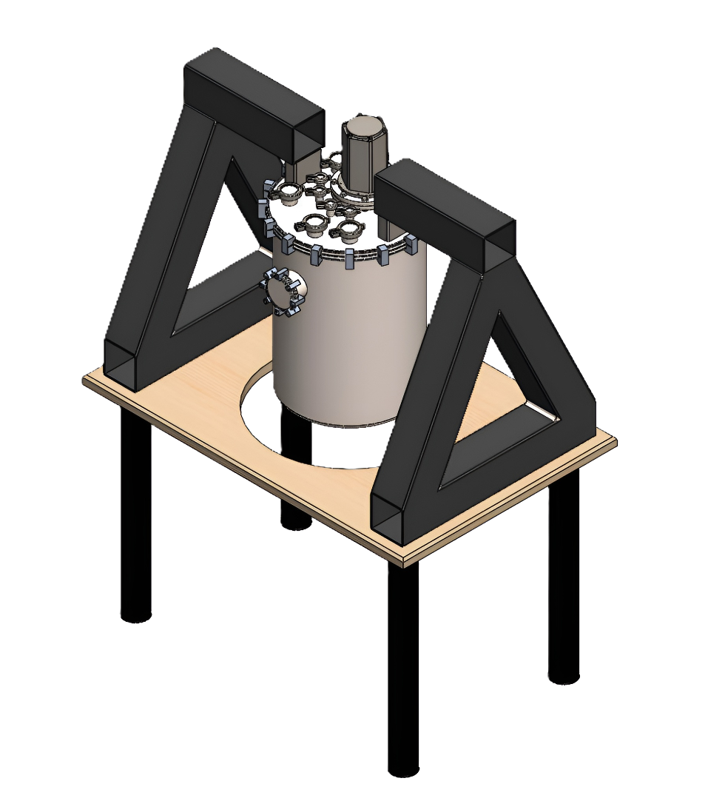
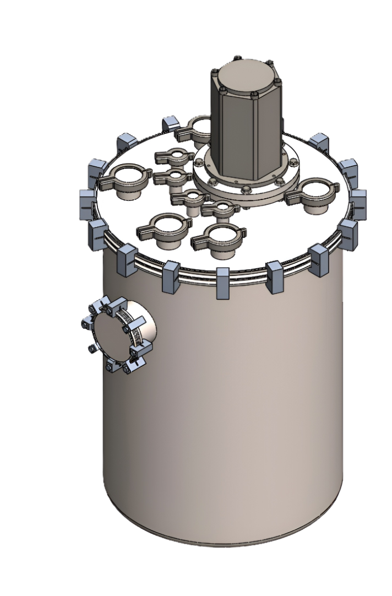
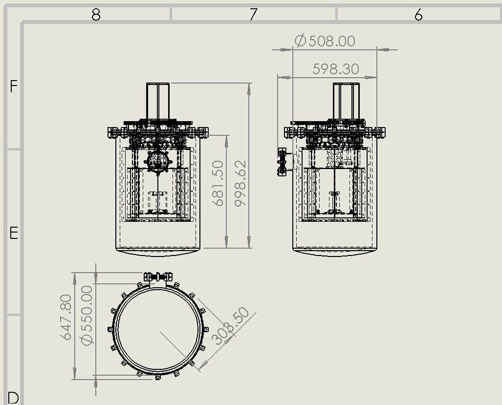

Requirements
Defined the three-temperature measurement concept and accommodation for approximately six to eight CFRP specimens.
Cryogenic engineering · Preliminary design
A SolidWorks-based experimental-system concept for studying carbon-fibre-reinforced polymer specimens at room temperature, approximately 65 K, and 4.2 K.

Overview
The system is designed to allow us to measure mechanical properties of different specimens and the coefficient of thermal expansion (CTE) simultaneously at extremely low temperatures and vaccum (space-like environment).
The experiment includes diode thermometry, controlled resistive heating, and laser metrology for measuring displacement. I developed the overall concept, three-stage architecture, experimental requirements, and initial SolidWorks assembly using the interface dimensions of a PT403RM pulse-tube cryocooler.
My contribution
Defined the three-temperature measurement concept and accommodation for approximately six to eight CFRP specimens.
Created the initial chamber, nested stages, cryocooler interface, structural supports, and service-port arrangement.
Planned diode sensors, heaters, optical metrology, CFRP supports, and flexible thermal links for vibration isolation.
System architecture
Each stage absorbs heat before it reaches the experiment. Final materials and dimensions require detailed thermal and structural analysis.
Vacuum boundary, structural enclosure, room-temperature interfaces, and service access.
Radiation interception and thermal anchoring for supports, wiring, and instrumentation.
CFRP specimens, temperature sensors, heaters, fixtures, and optical measurement targets.
CAD development



Assembly visualization
Engineering challenges
Radiation, supports, wiring, sensors, heaters, optical access, and residual-gas conduction all contribute to the cold-stage heat load.
Flexible braids must carry sufficient cooling power while limiting pulse-tube vibration transmitted to the metrology system.
The design must accommodate unequal contraction of copper, aluminum, stainless steel, CFRP, adhesives, and optical components.
Temperature uniformity, optical alignment, low vibration, and repeatable thermal contact are essential for useful measurements.
Current status
Project files